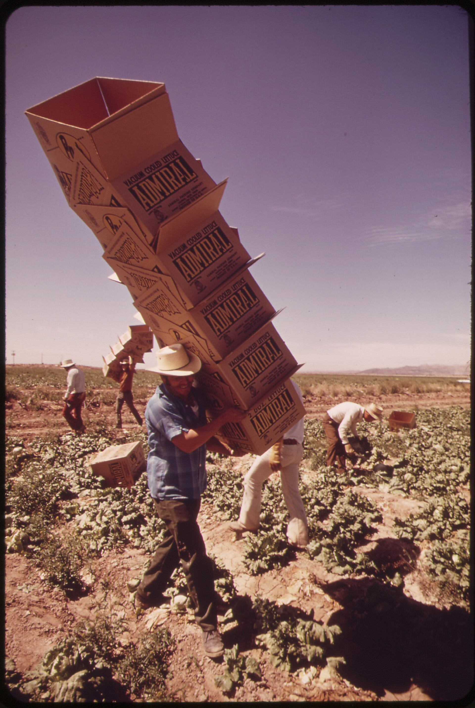

Buying food the "right" way shouldn't be this complicated. But ask four different experts and you'll get four completely different answers.
Every one of them is credible, and they still don't agree. So which do you believe? That's the same roadblock you'll hit as soon as you start working through your own sources.
The climate scientist · Poore & Nemecek, 2018
"Where your food comes from barely matters. We tracked 38,000 farms: transport is a sliver of food's footprint. What you eat dwarfs how far it traveled. 'Buying local' is mostly a feel-good move."
The local-food economist
"Local was never about carbon. A dollar spent with a nearby farm stays in your town, keeps small farms alive, and cuts the waste built into long supply chains. Food miles miss the whole point."
The organic researcher · Seufert et al., 2012
"Organic drops the synthetic pesticides and fertilizer, but it yields about 20% less per acre, so it needs more land for the same food. 'Organic' is not automatically greener."
The regenerative farmer
"Forget the labels. What heals the planet is how you treat the soil, cover crops, rotation, roots in the ground year-round. Regenerative land pulls carbon down, certified or not."
Which would you follow, and what is each of the others getting right?
So which one is right?
That's the wrong question.
You could argue this the whole class and never settle it. None of them is simply wrong. So instead of crowning one, listen to them together: where they agree (all four want food that doesn't wreck the planet) and where they collide (local vs. diet vs. yield vs. soil).
That's synthesis, and it's most of what a literature review is doing. Summarizing each source one at a time is the easy part. The work is figuring out what they say together.So, last question: what did all four of them leave out?
Five sources on the desk
Five real sources on one question: do eco-labels tell shoppers the truth?
Nielsen, 2018. Shoppers say they'll pay more for "natural," "organic," and "sustainable," and those products outsell conventional ones.
Consumer Reports, 2016. In a national survey, most shoppers thought "natural" meant no pesticides and no GMOs. It legally guarantees neither.
FDA. There is no formal federal definition of "natural" for food; the word says nothing about how the food was grown.
USDA. "Organic" is federally certified and inspected, but the rules cover farm inputs like pesticides and synthetic fertilizer, not carbon or water use.
Dumas, 2021. Eco-labels have multiplied so fast that shoppers can't tell a rigorous seal from a marketing badge.
Do this together: group these five into two or three themes. What connects them? Call them out, I'll map them.
The WorkNet · how these five connect
Two sources sit on the left (shoppers trust the words), three on the right (the words are loosely defined). They agree trust is high, but clash on whether it's earned. The dashed branch is your gap: a spoke with no source on it, because nobody mapped the people who grow the food.
WorkNet: Derek Mueller, a writing-studies scholar, developed it (this version, 2010) as a way to sketch how one source connects to others. See his originals.
Name it · synthesis
Synthesis: write your sources as one conversation
Same sources, two ways to write them up. Read the List, then the Conversation right under it.
Example 1 · do shoppers trust the labels?
List
Nielsen (2018) found shoppers pay more for eco-labels. Consumer Reports (2016) found most shoppers misread "natural."
Conversation
Shoppers pay real money for eco-labels (Nielsen 2018), even while misreading what the words legally promise (Consumer Reports 2016).
Example 2 · what do the words actually mean?
List
The FDA has no definition of "natural." The USDA certifies "organic." Dumas (2021) says there are too many seals.
Conversation
The labels shoppers lean on are wildly uneven: "organic" is federally inspected (USDA), "natural" was never defined (FDA), and new seals keep multiplying faster than anyone can vet them (Dumas 2021).

A farm worker in the lettuce fields along the Colorado River (U.S. National Archives, public domain).
Name it · the gap
The gap: what the conversation leaves out
The gap is the question your sources never reach. It usually takes one of these shapes:
A missing voice
All five sources study the shopper or the rule. None asks the people who grow and pick the food.
An untested setting
Every study looks at big grocery chains. None looks at a small farmers' market, where the labels may work very differently.
The map is what you write from.
How a WorkNet turns into a lit review
A cluster becomes a paragraph. Theme 1 turns into: "Shoppers reward eco-labels with real money and loyalty (Nielsen 2018), often assuming a regulation that isn't there (Consumer Reports 2016)."
The clash becomes your turn. "…yet the words carry wildly uneven rules, from ‘organic,’ which the USDA inspects, to ‘natural,’ which the FDA never defined (FDA; Dumas 2021)."The empty branch becomes your bridge. "What none of these studies asks is who grows the food, the question this study takes up." The WorkNet doesn't write the review; it hands you the skeleton, and that empty branch is your reason for writing.
Your turn · Notebook Entry 4a
Map your own sources, then name your gap.
On your own first, then we'll hear a few.
You likely have more than five sources by now. Pull together everything you have or plan to use, then either sort them all into themes or pick the five that best show your themes. Give each theme a plain name.
Inside and across those themes, where do your sources agree? Where do they push against each other?
Draft your bridge sentence: "The research shows ___, but no one has ___, which is what I'll do."
Read me your bridge sentence. What has nobody done yet?
A strong gap is specific, and often names a missing voice.
Close
A lit review is your sources in conversation.
Thursday: enter the conversation and write it. P1 is due in Week 5, so start early.